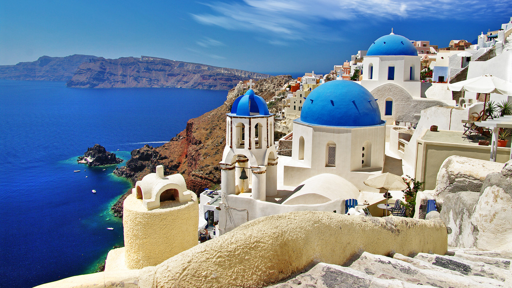

Pays de vacances
Ville en Grèce
La Grèce est un État d’Europe du Sud et membre de l'Union européenne, situé dans l'extrême Sud des Balkans. Sa capitale et sa plus grande ville est Athènes. La Grèce est membre de l’OTAN depuis 1952, de l’Union européenne depuis 1981 et de la zone euro depuis 2001.
Pays de vacances
Ville en France
La cathérale Saint-Pierre de xx est une cathédrale catholique romaine située à xxx, dans le département de l'Oise, dans la région Hauts-de-France, en France. Elle possède le plus haut chœur au monde (48,50 m). De 1569 à 1573 la cathédrale est avec sa tour de 153 mètres la plus haute construction humaine du monde. Terminée, elle serait la plus grande cathédrale gothique de France devant celle d'xx.